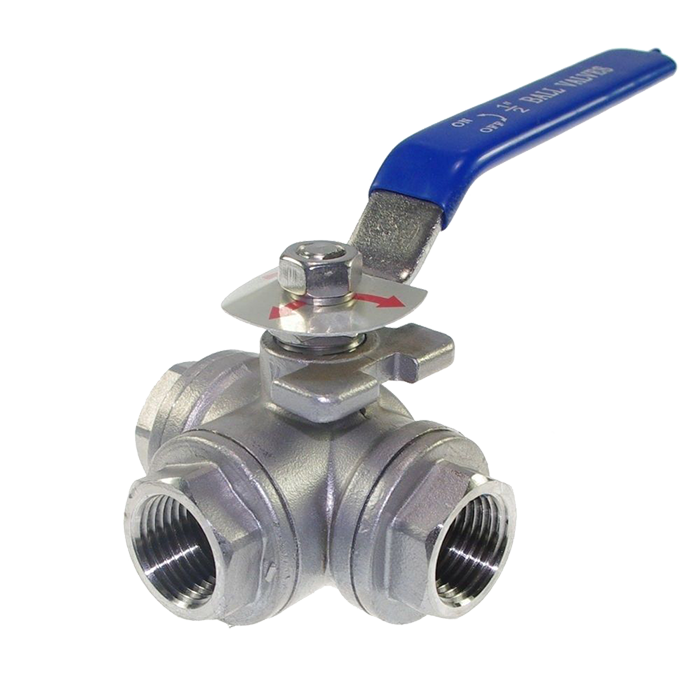

Ball valves are the most commonly used multi-port valve. There are two types of three-way ball valves; the L port and the T port valve. These valves are named according to the shape of their opening.
The L-port 3-way valve is popularly known as the diverting valve. They have flow paths in the shape of an L forming a 90-degree angle. The angle allows flow from one inlet and directs it into one of the outlets.
The T port valve is the valve referred to as the mixer or, better yet, the 180-degree valve. It can also transfer media from one source to another by aligning the T lines with the valves so all the ports can mix up. You can also direct opposite flows from one source into two places simultaneously.